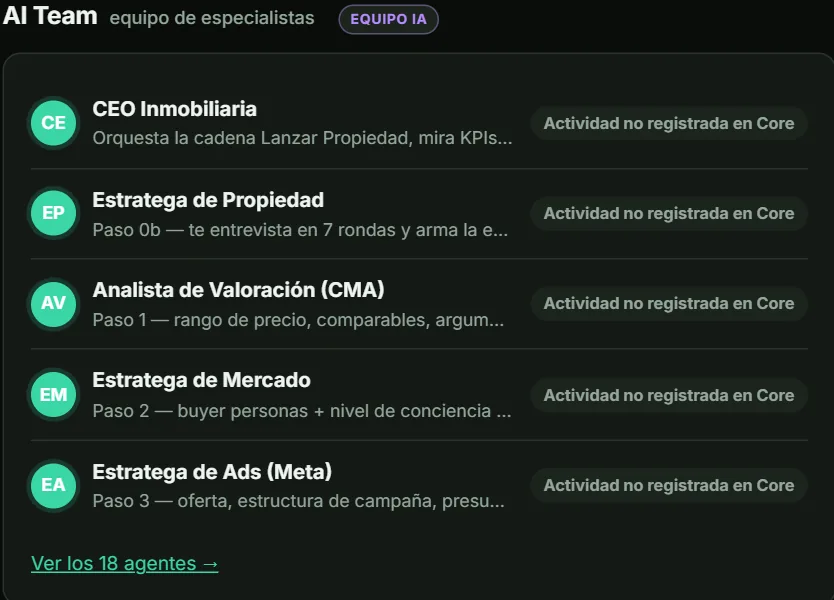

Inventario inmobiliario estructurado
Organiza la información de propiedades, proyectos, tipologías, unidades y precios en una estructura diseñada para facilitar su consulta y gestión.
Inteligencia inmobiliaria · Plataforma en desarrollo
El futuro de una inmobiliaria no depende de cuántas herramientas utiliza, sino de qué tan bien puede conectar su información, su inteligencia y sus operaciones comerciales.
SOFYMAR CORE está evolucionando para convertirse en el núcleo de inteligencia de un ecosistema inmobiliario conectado: una infraestructura diseñada para organizar el conocimiento de tu negocio y preparar el camino para una nueva forma de operar con inteligencia artificial.
Plataforma en desarrollo. Consultá sobre su evolución y las posibilidades de integración para tu negocio.
El punto de partida
Propiedades, proyectos, documentos, precios, requerimientos, clientes y oportunidades comerciales forman parte del día a día de una inmobiliaria.
Pero tener toda esa información no significa que esté conectada, organizada o disponible cuando realmente se necesita.
Cuando cada herramienta trabaja por separado, el negocio pierde contexto. El equipo dedica tiempo a buscar información, las oportunidades dependen de procesos manuales y la inteligencia comercial queda limitada por la forma en que se gestiona el conocimiento.
El siguiente paso no es añadir más herramientas. Es construir una infraestructura que permita trabajar de forma más inteligente.
SOFYMAR CORE
SOFYMAR CORE es la evolución tecnológica de SOFYMAR hacia una plataforma de inteligencia comercial especializada en el sector inmobiliario.
Su propósito es centralizar y estructurar el conocimiento del negocio para que la información de propiedades, proyectos, unidades y documentos pueda convertirse en una base útil para consultas, análisis y procesos comerciales asistidos por inteligencia artificial.
No se trata simplemente de almacenar propiedades. Se trata de construir una estructura de conocimiento sobre la que pueda operar un ecosistema inmobiliario más conectado.


Un núcleo
Organiza la información de propiedades, proyectos, tipologías, unidades y precios en una estructura diseñada para facilitar su consulta y gestión.
Relaciona la información comercial con sus documentos y fuentes disponibles, ayudando a construir una visión más coherente del inventario.
Prepara el terreno para consultar información inmobiliaria en lenguaje natural, identificar datos relevantes y apoyar decisiones comerciales con mayor contexto.
Una arquitectura orientada a conservar referencias sobre el origen de los datos y sus cambios, según las capacidades implementadas y verificadas.
El equipo de IA
Dentro de SOFYMAR CORE trabajamos en un equipo de agentes especializados, organizado como una agencia inmobiliaria: unos deciden la estrategia, otros leen el mercado, otros crean el contenido y otros cuidan los resultados.
Deciden qué hacer primero y cómo se vende cada propiedad.
Orquesta todo el equipo, mira los números y dice cuál es el siguiente paso.
Te entrevista y arma contigo la estrategia comercial de cada propiedad.
Define quién compra y qué tan informado o desconfiado llega ese comprador.
Mira el negocio completo: si es vendible y si escala a más propiedades y asesores.
Con todo lo generado, indica qué probar primero y en qué formato.
Leen el mercado real antes de tomar decisiones.
Compara la propiedad con otras similares y arma el argumento para defender su precio.
Lee el inventario en venta hoy: competencia, demanda y precio por m² en cada zona.
Revisa qué está pautando la competencia ahora mismo antes de fijar el mensaje.
Lee brochures, listas de precios y planes de pago y los ordena en una base comparable.
Convierten una propiedad en anuncios, guiones y páginas.
Arma la oferta, la estructura de campaña, el presupuesto y el embudo.
Escribe la idea central, los ángulos de venta, los ganchos y los textos de los anuncios.
Prepara la estructura de los videos que graba el agente que vende la propiedad.
Define qué comunica cada pieza: mensaje, texto en pantalla y formato.
Mira la pieza terminada y dice si está lista para publicar: precio visible, marca y mensaje claro.
Estudia a los mejores creadores del sector y adapta sus ganchos a tu mercado.
Diseña la landing sección por sección, con el texto adaptado al comprador.
Cuidan lo que pasa después del clic y cuánto rinde cada boliviano.
Define el seguimiento después del clic: etiquetas, avisos, mensajes y tiempos.
Ordena gasto, leads y costo por lead, y prepara la rendición de cuentas con datos reales.
Equipo en desarrollo: hoy se prueba dentro del prototipo de CORE. Cada capacidad se irá habilitando a medida que se implemente y se verifique.
El ecosistema
Una inmobiliaria necesita mucho más que una lista de contactos. Necesita conocer su inventario, comprender sus oportunidades y coordinar la información que utiliza para vender.
Por eso, SOFYMAR CORE está concebido para trabajar dentro de un ecosistema en el que cada componente cumple una función diferente.
La capa de conocimiento e información estructurada del negocio: propiedades, proyectos, unidades, documentos y datos comerciales.
En desarrolloLa capa de inteligencia artificial diseñada para consultar información, interpretar necesidades y apoyar tareas comerciales mediante las herramientas y capacidades disponibles.
El CRM que permite administrar contactos, conversaciones, oportunidades, seguimientos y automatizaciones según la configuración de cada negocio.
El resultado que buscamos
Una arquitectura donde el conocimiento inmobiliario pueda respaldar la atención comercial y donde las oportunidades tengan un recorrido más organizado: desde el primer contacto hasta el seguimiento y la gestión de la oportunidad.
CORE organiza el conocimiento. SOFYMAR IA lo aprovecha. GoHighLevel gestiona la relación comercial.
La integración y el alcance de cada flujo se encuentran sujetos al desarrollo y la validación correspondientes.
La visión del flujo
Imaginá que tu negocio recibe una consulta sobre un departamento, una casa o un proyecto inmobiliario.
Para responder bien, no basta con tener un contacto registrado. También necesitás información confiable sobre la propiedad, sus características, su precio y su disponibilidad, además de un proceso que permita continuar la conversación.
La visión de SOFYMAR es conectar esas piezas.
La información inmobiliaria se estructura en SOFYMAR CORE para facilitar su consulta y gestión.
SOFYMAR IA puede apoyarse en el conocimiento disponible para ayudar a resolver preguntas y asistir al equipo comercial.
GoHighLevel permite administrar los contactos y las oportunidades, además de ejecutar los seguimientos y automatizaciones configurados.
El objetivo es reducir la fragmentación entre información, atención y seguimiento, con procesos comerciales más coherentes y trazables.
Este flujo representa la visión de funcionamiento del ecosistema. Su disponibilidad completa depende de las integraciones implementadas y verificadas.
El impacto buscado
SOFYMAR CORE está siendo desarrollado con una visión clara: ayudar a que el conocimiento de una inmobiliaria deje de estar disperso y se convierta en una parte activa de su operación.
Una estructura de conocimiento pensada para facilitar el acceso a los datos inmobiliarios relevantes.
La posibilidad de consultar información estructurada en lugar de depender exclusivamente de búsquedas manuales y conversaciones aisladas.
Una arquitectura diseñada para relacionar el conocimiento inmobiliario con la inteligencia artificial y la gestión comercial.
Un enfoque que busca preparar el negocio para incorporar nuevas capacidades de inteligencia, automatización e integración a medida que evolucionen sus necesidades.
No prometemos resultados automáticos por instalar una herramienta. Construimos la infraestructura para que la tecnología pueda aportar valor dentro de procesos bien diseñados.
Será un ecosistema donde la información tenga estructura, la inteligencia tenga contexto y las oportunidades comerciales puedan gestionarse con continuidad.
SOFYMAR CORE forma parte de esa visión: una evolución de la tecnología inmobiliaria que busca ir más allá de almacenar datos y construir el núcleo de conocimiento sobre el que pueda desarrollarse una operación comercial más inteligente.
El siguiente paso es conectar la información con la capacidad de actuar sobre ella.
En desarrollo
Estamos evolucionando SOFYMAR hacia una infraestructura de inteligencia inmobiliaria que conecte conocimiento, inteligencia artificial y gestión comercial.
Si dirigís una inmobiliaria, gestionás proyectos inmobiliarios o buscás mejorar la forma en que tu negocio organiza su información, queremos conocer tus necesidades y conversar sobre las posibilidades de esta evolución.
Conocé la arquitectura, explorá el enfoque del proyecto y descubrí cómo podría encajar en la operación de tu negocio.
SOFYMAR CORE se encuentra en desarrollo. Las funcionalidades, integraciones y condiciones de disponibilidad están sujetas a validación y evolución del producto.
Preguntas frecuentes
Es una plataforma en desarrollo orientada a centralizar y estructurar el conocimiento inmobiliario para facilitar su consulta y su aprovechamiento dentro de procesos de inteligencia comercial.
No. Su enfoque es el conocimiento y la información estructurada del negocio inmobiliario. GoHighLevel cumple la función de CRM para gestionar contactos, conversaciones, oportunidades y procesos comerciales.
SOFYMAR IA es la capa de inteligencia artificial del ecosistema. La visión es que pueda utilizar el conocimiento inmobiliario organizado para apoyar consultas y tareas comerciales mediante las capacidades e integraciones disponibles. Conocer SOFYMAR IA.
La arquitectura contempla la colaboración entre SOFYMAR CORE, SOFYMAR IA y GoHighLevel. El alcance de cada integración depende de su implementación y validación; no todas las conexiones deben considerarse disponibles o automáticas mientras sigan en desarrollo.
SOFYMAR CORE se encuentra en desarrollo. Podés ponerte en contacto con SOFYMAR para conocer la evolución del proyecto y conversar sobre las necesidades de tu negocio.
Para inmobiliarias, agentes, equipos comerciales y desarrolladoras que necesitan organizar mejor la información de sus propiedades y avanzar hacia una operación apoyada por inteligencia artificial y procesos comerciales conectados.
Datos que se pueden consultar
Un agente inmobiliario maneja planos, listas de precios, brochures y disponibilidad en muchos archivos distintos. CORE está pensado para reunir esa información y que el equipo pueda consultarla con ayuda de inteligencia artificial.
Funcionalidad en desarrollo: se habilita a medida que se implementa y se verifica.
Contacto
Contanos qué querés mejorar en tu negocio inmobiliario. Te ayudamos a identificar por dónde empezar y qué solución puede tener más sentido para vos.